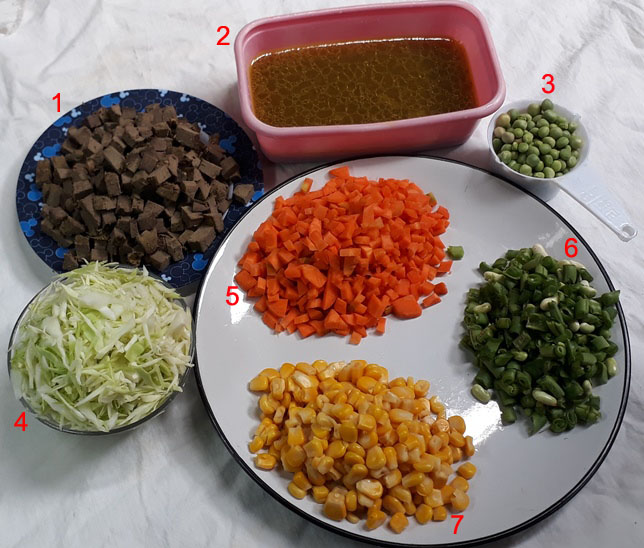
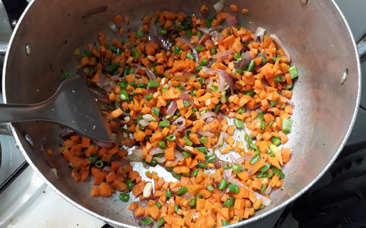
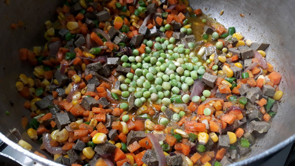
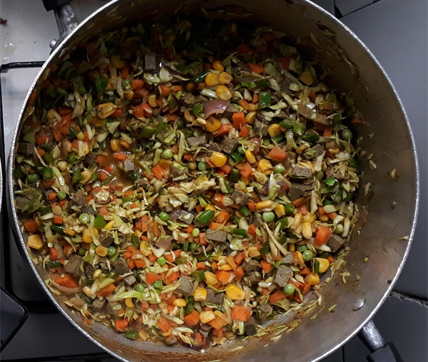
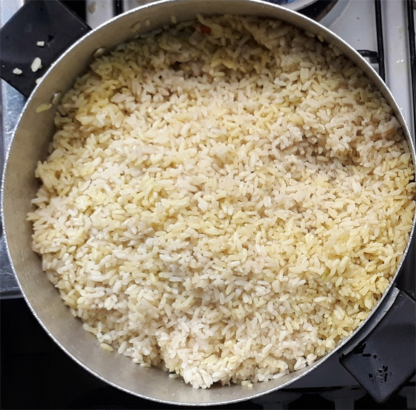
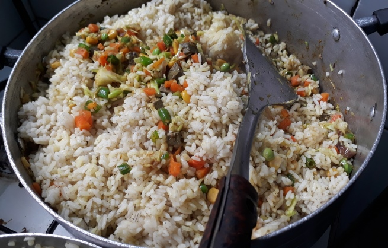

Chicken and liver (both together) with all the spices (a teaspoon of salt, half cup of sliced onions, a teaspoon of thyme spice, a teaspoon of curry, two seasoning cubes teaspoon each of powdered ginger and garlic).
Allow the meat to cook for ten to fifteen minutes, taste for salt, then pick out and deep fry. Be sure to reserve the stock (meat water)
Chop the cabbage, green beans, carrot, liver and set aside in a wide tray.
This process is easy, I normally use just a knife and chopping board or a tray.
Parboil the 4 cups of rice also and cook with half of the meat stock (water from the meat) and two cups of water, cook until it is about 70% done.
You have to observe the rice closely. It doesn’t need to be too soft or too hard, just almost done.
Step by step
Set your cooking pot on heat, allow to dry, then pour in about 200ml of vegetable oil.
Note: It is better to continue with the same oil you used while frying the meat (that is only if you fried the meats), you can reduce it to 200ml.
Then add the chopped carrot and green beans, any of these two can actually go first. 
Add the chopped liver and sweet corn, stir.
Meat stock (water from the meat) should follow, add ground pepper (optional), add a teaspoon of salt and, add 1 seasoning cube then stir and taste, you may add more salt.
Add the green peas.
Stir for 1-2 minutes then add cabbage and the curry powder (Curry is a yellowish spice that actually adds the yellowish color to fried rice, add and stir till you are satisfied with the color.)
You would have a yellowish mixture that would often taste overly spiced, don’t worry the rice would balance the taste.
If you are satisfied with the taste then add the green pepper, stir.
 Add the almost-done white rice.
Stir all together, cover your pot and allow to simmer for 5-7 minutes
That is how to make fried rice.